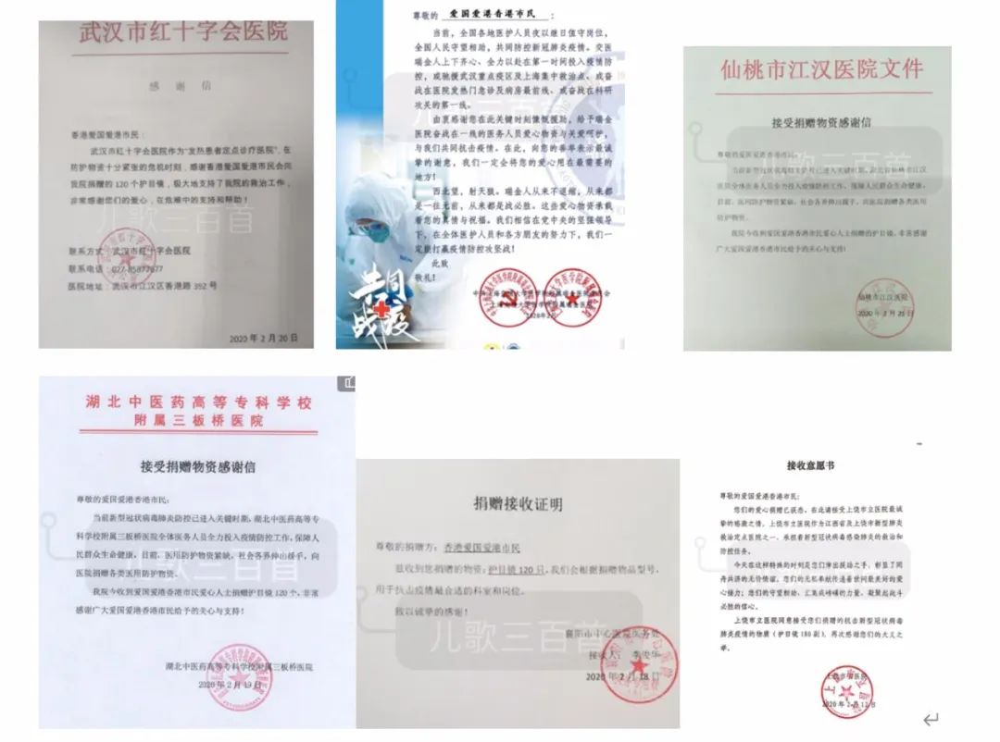
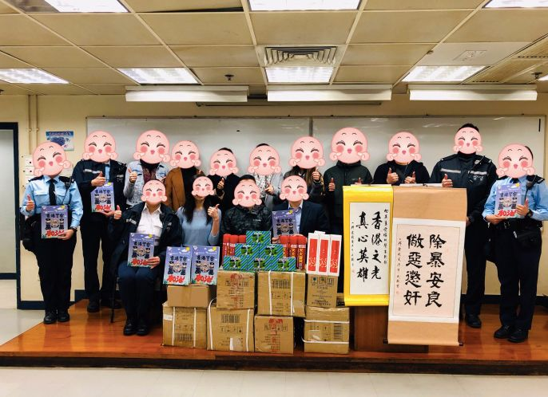
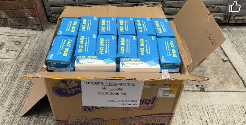
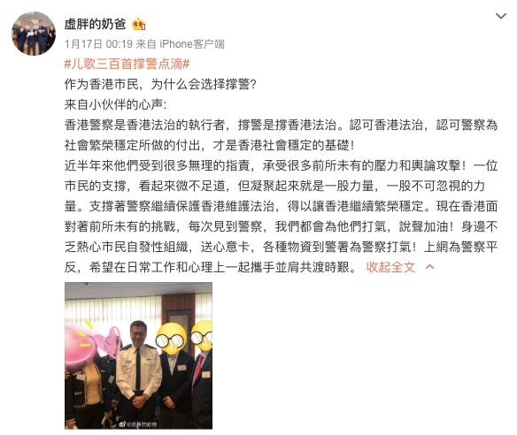

口述实录 | 香港女孩岑雅茵：大家都要平平安安，阿中哥哥加油！
原文链接 备份链接 总体而言，港人对待疫情，后来就没有内地那么紧张了。我妈妈讲，她觉得作为一个香港居民，自己最大的感受是彷徨。她抱怨道，在香港，没工开等于没饭吃了；公司起先通知放假到24号，何时复工再议，而现在仍然是等通知的状态。 …

无论是港警、医生、护士、议员，疫情面前我们都只是普通人，都有机会被感染。如果说反修例事件让我们在香港得这些爱国爱港人士紧密联系在一起，那么新冠肺炎疫情让我们认识到作为中国人有多幸福。
记 者 | 周 洁
受访人 | 虚胖的奶爸
看着一封封医院确认收货的感谢函沿着网络传到我们的手机里，看着内地的疫情一步步得到控制，我们的心情最近也变好了。

部分医院开具的感谢信
因为此前香港的一些风波，我和我身边的朋友自发组成了一个爱国爱港团体，我们中有律师、公务员、媒体人，也有销售、商人、主妇，还有过去大半年里备受瞩目的香港警察，我们这些人的共同点：既爱国，也爱港。最大的心愿，就是国家繁荣，香港安定，我们能够安居乐业。
捐钱捐物，为内地抗疫出一份力
疫情发生后，我们身边很多人都想为内地做些事。我们从新闻上了解到，内地的口罩供应非常紧缺，于是我们打算在海外采买一些口罩寄给需要的地方。恰好我们有小伙伴，因为职业的关系，跟湖北的一些医疗机构认识，能够直接寄到武汉。
令我们没有想到的是，口罩的采买还是挺波折的。比如我们在韩国的口罩采买，因为缺货、涨价等关系，买到的口罩数量不太多，甚至还有商家把收到的款项退给我们。原先，我们委托了商家帮我直接快递到武汉，也曾委托一些旅游中介机构帮忙运输，但都没有谈成。后来疫情发展，韩国限制了医疗物资的出口——对于口罩类产品，一个快递不能超过300只，种种因素下，我们的一个小伙伴亲自飞到韩国分装打包，把几千只口罩分成了六七个快递邮寄，虽然工作量变大了，邮费也高了很多，但能帮到同胞，我们还是挺开心的。
之所以不从香港直接买口罩邮寄，是因为当时香港的快递已经停运，只有邮政才能寄到内地，但邮政的寄送需要具体收件人的身份证信息，对于我们不太方便，所以没有采用。

“儿歌三百首”是该团体的名字
后来，我们联系到仙桃一家生产防护服的工厂，这个厂家有两条生产线，一条用来出口，一条是生产国标的防护服，国标的防护服已经被国家征用了，我们买不到，出口的防护服虽然没有达到医疗用的标准，但我们考虑到在当时疫情大暴发的情况下，防护服是很紧缺的，即便一线用不上，二线也可以用。
于是，我们拿着厂家给我们的防护服相关资料，发动群里的小伙伴联系仙桃周围地市的医院，如果他们确定可以接收，那我们就把防护服想办法运过去。其实，当时湖北的各地交通已经封锁了，车辆通行需要各种通行证，幸好我们通过朋友的关系辗转联系到了有运输资格的物流公司，不过运输的时间比平时要慢很多，比如我们运的一批从仙桃到天门的防护服，平时只要五六个小时，但这批货的运输却花了20多个小时，司机师傅往往只能在路边简单地解决一下吃饭，非常辛苦。靠着这种办法，我们大概捐了3000多套防护服。


部分医院现场交接照片
由于湖北封城政策越来越严格，防护服的物流最终中断了，厂家就把剩余的钱款返给了我们，商量了一下之后，我们决定用这笔钱采购护目镜。当时除了湖北，内地的其他省区市的也陆续有确诊病例出现，我们先后联系到了湖北、上海、广西、深圳、湖南等地需要护目镜的医院，进行了捐赠。
在这场爱心接力中，我只是一个协调人，我的背后，是一群爱国爱港的香港市民。他们中的很多人我并不认识，但大家有钱的出钱，有力的出力，三百五百的善款汇成涓涓细流，将一件件抗疫物资带去了需要他们的地方。
其实，除了抗疫，我们这些人还有一个目的——最近这一年，内地和香港的冲突很多，两地民众的误解也很大，我们希望通过自己的行为，让内地看到，并不是所有香港人都没有对祖国的身份认同，我们是跟祖国血脉相依，命运相连的。
撑警抗暴，期待繁荣香港再现
其实，这不是我们这群人第一次聚在一起。
过去几个月，香港围绕修例，社会变得不太稳定，香港的警察承受了很大的压力。作为普通市民，表达对警察的支持，让他们觉得有人跟他们站在一起，变得非常重要，于是我们几个朋友组建了一个群来支持警察。
香港暴力事件最严重的时候，普通人可能会在遭遇暴徒时手机被抢走翻看。如果你的微信群名里有“爱国爱港”之类的文字，可能会遭到暴徒的骚扰甚至报复，出于保护大家安全的考虑，我把群名改成了“儿歌三百首”——这是周星驰的一部电影，法师玄奘一直想用随身携带的《儿歌三百首》感化妖怪，一开始虽然他很羸弱，不堪一击，但日子久了，儿歌三百首重组，化为了一句句佛经，终于将妖怪降服。
去年10月，我们作为“儿歌三百首”热心市民团体，第一次为支持警察募捐了4万余元港币。我们用这些钱分两次采买了一些食品饮料、能量棒、保健药品等等到几个工作量最大的警署进行慰问。
[](https://v.qq.com/x/page/y30235xgnz1.html)
虽说我之前也跟其他爱港团体去过警署慰问，不过第一次自己主动联系去警署，还真有点不知道跟警察说什么，只好简单介绍了下自己的生活工作情况，表达了市民对警察的支持。

不得不说，非常时期，进入警署还是需要勇气的。我记得送第一批货的时候，警署门口围了好多拿着摄像机单反的鬼鬼祟祟不明身份者，接收物资的警察跟我们说，原来，当天香港组织了一些示威活动，他们蹲在门口，是在等反对派来袭击警署……
第二次买保健品的时候，药店老板看我们短期内大量购买了两次，还试探性地问我们是否是给警察做捐赠，他知道以后，在原价的基础上打了一些折扣卖给我们。他说，他也很想支持警察，但如果他透露这种立场，可能店都会被暴徒砸了，现在我们来做这件事，他也想出一份力。
我们去湾仔警署的时候，大概每十几分钟就能看到一波来慰问的团体。后来，我们觉得送吃的和保健品很多人都已经在做了，我们想送点更实用的。
通过朋友，我们了解到，警察出勤时因为腰部配枪和其他一些装备，时间长了挺累的。市面上有一种护腰垫，放在腰部可以多一层保护，于是我们给旺角警署捐了800套。此外，我们还买了一些便携式灭火器和其他防护装备。

理工大学要清场的那天，我们采购到了一批战术手套，能够防刀割——如果暴徒突然要拿匕首捅警察的话，戴了手套，警察可以抓住匕首。我们第一时间把手套送去了尖沙咀警署，他们马上能够用得上，觉得自己做的事挺有意义的。
那段时间，还有很多暴徒晚上出来示威，我们就第一时间给警察采购了一种佩戴在帽子上的强光手电筒，这些不是标准装备，如果等警务处走流程，不知道要等到猴年马月。找到具体型号后，我们打算采购2800只左右，不过香港的供货商报价太高。后来，我们跟深圳的厂家联系，他知道我们的目的后，给了我们非常优惠的价格，还送了我们一些配件，最终我们顺利地把这批物资给到了香港的警署。
只要是对警察有用的，我们都会想办法买给警察。截至目前，我曾经先后组织过30多场的撑警活动，估计有1200多人参与了我们的物资众筹活动，近百人到过现场送物资。
最近，香港的疫情状况也不容乐观。我们了解到有警察被确诊了，我们给家属送了一些口罩和消毒用品，虽然价值不大，但我觉得这是一种鼓励，一点心意。


我书念得不多，说不出什么大道理。但我很感谢这段时间周围人对我们的信任，也感动于我们的凝聚力。我想，这是因为我们都热爱香港这片土地，我们热爱这个国家，我们都是中国人，我们不愿意看到香港整个社会撕裂。

过去发生的那些暴力事件，不应该被无良媒体美化，错的就是错的。香港警察作为维护社会秩序的最后一道防线，我们希望给他们切切实实的支持，做些力所能及的事情。
这两件事突然让我们回归到了家国情怀，并且付诸行动。无论是港警、医生、护士、议员，疫情面前我们都只是普通人，都有机会被感染。如果说反修例事件让我们在香港的这些爱国爱港人士紧密联系在一起，那么新冠肺炎疫情让我们认识到作为中国人有多幸福。
雨过天晴后，我们希望繁荣稳定的香港早日重现，还我们一个安居乐业的社会。


· 深度好文 | 特朗普及西方政客们热衷炒作“中国病毒”的真正目的
· 还原世卫组织“吹哨”时间轴——“机会之窗”是如何失去的？
新民周刊所有平台稿件， 未经正式授权
一律不得转载、出版、改编或进行
与新民周刊版权相关的其他行为，违者必究


原文链接 备份链接 总体而言，港人对待疫情，后来就没有内地那么紧张了。我妈妈讲，她觉得作为一个香港居民，自己最大的感受是彷徨。她抱怨道，在香港，没工开等于没饭吃了；公司起先通知放假到24号，何时复工再议，而现在仍然是等通知的状态。 …
原文链接 备份链接 意大利确诊数破千时，大部分英国人还在隔岸观火，有人甚至拿新冠病毒开玩笑。如今英国人聚集的社交网络上多的是祈祷上帝保佑的推文。有人调侃说，老外都跟在华人后面逛超市，华人买什么他们就买什么 文 |《财经》驻英国特约作者 文 …
原文链接 备份链接 这次疫情，也让我对祖国有了更深刻的认同，突发事件面前，我们国家的组织调配能力是一流的。 记者 | 沈 林 受访人 | 胡晓琳 最近很多在海外的同胞们都在纠结一个问题：非常时期，到底应不应该回国？或许我的经验可以给他们 …
原文链接 备份链接 《小酒馆》，是燃财经旗下的故事栏目，真人真事，讲述创新经济时代的人生百态。本文为第35期。 作者 | 金玙璠 孟亚娜 陈琪 编辑 | 魏佳 “新冠疫情，中国打上半场，世界打下半场，华人留学生打全场”。这虽然是一句调侃， …
原文链接 备份链接 安徽官宣部分公共场合可摘口罩，这符合当地目前抗疫数据所表现出的向好趋势，但不少安徽民众对在部分公共场合不戴口罩表示“担心”。受访专家认为，各地区抗疫的具体进展不同，较难对“摘口罩”的时机作出统一判断，各地应根据自身情况 …